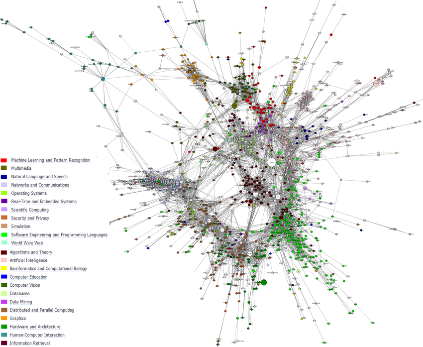

为什么你读不完一本书？
这不怪你，因为任何知识，都有前置条件。所谓的前置条件，就是为了读懂第1章的概念，你需要读到第9章才会恍然大悟。
你可能会问，为什么不先写第9章呢？原因是相同的，如果你要读懂第9章的那个概念，要用到第4章里的概念。
越复杂越系统的专业或者技术书籍越是如此，从入门到精通是理想的状态。
且不说如何入门，其实，门在什么地方，都不一定能说得清楚。因为专业的知识，到处都是门，你只要从某个地方进入即可，只要深入研究这扇门，一定能将你传送到某个地方，最终会让你豁然开朗。
举个例子，无论你在大学里学哪个专业，这个专业的知识都被分解成了一门门的课程，这些课程之间互相联系，又分别独立。以计算机科学为例，《计算机组成原理》、《数据结构》、《Java编程》、《网络与通信》、《操作系统原理》……这些课程之间绝对不是独立的，之间有千丝万缕的联系。
知识是网状的结构，而不是线性的。我们学的每一门知识，都像是一个迷宫。每个节点代表一个知识点，知识点越多，迷宫就越复杂。
下图是计算机网络知识的联系图，如果你要入门，那么，哪里才是真正的门？

很难说清楚应该从哪个门进入，我们唯一能做的就是无论从哪个门进入，都要在这个迷宫一样的网络图里探索。网络图的特点是，每个节点都不是孤立的，你总可以从一个节点到另一个节点。
很多人读不完一本技术书籍的原因是：看到不懂的就放弃了。如何解决这个问题呢？也很简单：碰到不懂的不要放弃，而是先放一放，略过这个节点，到下一个节点。知识点不同于爱情，走过路过不要错过。知识点是只要你走过路过，就不会错过，总有那么一个时刻，你会突然间想到那个你当时不懂的点，然后豁然开朗。
因此，读书一定要养成的一个习惯是：反复阅读教材+做题。
反复阅读教材可能是最好的自学方法。以我为例吧，我读的高中是我们那个市最差的高中，学校坐落于农村，那个高中只招，也只能招周围农村的学生。别说城里的孩子了，就算农村里有点见识的家长，也不忍心孩子上那个高中。升学率有多低呢？每年可能招700个学生，能考上本科的人数，一般在40-50人左右。对，你没看错，不是400-500人，是40-50人，我高考的那年，好像是39人。我母校的命运也极为悲惨，由于名声在外，只要去读我那所高中，约等于高考失败，越来越多的学生和家长不再报考这所高中，生源就越来越差，最后实在是招不到学生了，就解散了，老师合并到了另一个学校。
我在这所高中里，考上了重点本科。给了我很大的信心，后来考研究生就不在话下了。虽然日后证明，光会考试的农村做题家其实没啥用（多么痛的领悟！），但是，我的法宝就是反复阅读教材，随机的刷题。
我觉得是有用的。有一本很出名的认知学的书叫《make it stick》，作者是Peter C Brown，我读这本书的时候，有一种似曾相识的感觉，这不就是我从高中以来一直使用的方法么？
想要掌握知识，就要反复阅读加做题，如果只是重复的阅读，效果并不好。而是要不停的反问自己，情景模拟，使大脑重建立记忆。这一点，在编程中的体验，我认为是读书，写代码，调试。
调试的时候，就是长脑子的时候。
很多人读不完一本技术书籍的原因是因为太难了，但是太难了的原因是没有读完。实际上，如果能继续囫囵吞枣的读下去，再回来看前面，就能理解一些了。也就是说，书不是因为难才读不完，而是因为没读完才显得难。
我曾经给孩子报过美术课，因为家长总是觉得自己的孩子与众不同，万一我家孩子是个美术天才呢？学一段时间以后，才知道原来也是普通人，这样就安心了。孩子学了多少我不知道，但是我觉得那个叫韦唯的美术老师——之所以我能记住他的名字，是因为他的名字跟一个歌星一样——给我说的一句话，让我受用终生。我说，你看我家孩子画的，可真难看。这个老师说，画画都是这样，画到一半的时候，谁的画都不好看，只有完成了，画才好看。
我觉得这句话非常正确，软件也是如此，做软件，做到一半的时候，到处是bug，运行起来颤颤悠悠的，但是慢慢的就修复了。很可惜的是，我们很难看到只画了一小部分的画，也不太容易见到bug到处都是的半成品。
读书也是如此，读到一半的时候，最难了，前面的搞不懂，后面的感觉更搞不懂。于是，大部分人读书就是读个前言，读个开头，就认为自己不是学这个的料。或者有些人一定要把所有的都搞懂，才肯继续下去，这样的结果要么是反复地困在第一第二第三章，要么彻底放弃了。
书，看不懂也要看完，反复的看，读书百遍，其义自见。
还有一点，你不用了解编程的所有知识，只需要了解你需要的那些就够了。就像你在一座城市里住了那么久，你知道的可能只是你周边的那一部分，至于其它地方，不知道也无所谓。如果要去，GPS导航一下，也就到了。比如要做一个2D游戏，你暂时不用管什么Java网络编程，即使Java网络编程非常重要，但是，目前真用不上，你就先不用操心了。等到你熟悉了Java 2D游戏编程，会发现，原来Java网络编程也没那么难，你已经会了90%，甚至更多。
这时候，就需要信心与耐心了。有些人有信心，但是总是三分钟热度，什么事情都想马上出成果，恨不能今天看了Java的编程书，明天做一个Minecraft游戏，卖给微软。还有一些人有耐心，但是没信心。不管你认为你能行还是不能行，你都是对的。如果你打心底就认为这玩意学不懂，太难了，那么，肯定是学不会的。
一不要急于求成，二不要妄自菲薄。静下心来，全神贯注的投入200-300个小时，一定能搞清楚的。想一下，每天投入3-4个小时，2个月就可以了。只要学会了一门编程语言，再学其它的，都会简单太多了。